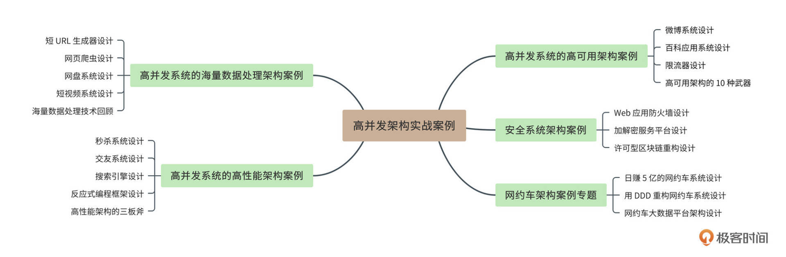

- 00 开篇词 “附身”大厂架构师，身临其境设计高并发系统.md.html
- 01 软件建模与文档：架构师怎样绘制系统架构蓝图？.md.html
- 02 高并发架构设计方法：面对高并发，怎么对症下药？.md.html
- 03 短 URL 生成器设计：百亿短 URL 怎样做到无冲突？.md.html
- 04 网页爬虫设计：如何下载千亿级网页？.md.html
- 05 网盘系统设计：万亿 GB 网盘如何实现秒传与限速？.md.html
- 06 短视频系统设计：如何支持三千万用户同时在线看视频？.md.html
- 07 海量数据处理技术回顾：为什么分布式会遇到 CAP 难题？.md.html
- 08 秒杀系统设计：你的系统可以应对万人抢购盛况吗？.md.html
- 09 交友系统设计：哪种地理空间邻近算法更快？.md.html
- 10 搜索引擎设计：信息搜索怎么避免大海捞针？.md.html
- 11 反应式编程框架设计：如何使方法调用无阻塞等待？.md.html
- 12 高性能架构的三板斧：分析系统性能问题从哪里入手？.md.html
- 13 微博系统设计：怎么应对热点事件的突发访问压力？.md.html
- 14 百科应用系统设计：机房被火烧了系统还能访问吗？.md.html
- 15 限流器设计：如何避免超预期的高并发压力压垮系统？.md.html
- 16 高可用架构的十种武器：怎么度量系统的可用性？.md.html
- 17 Web 应用防火墙：怎样拦截恶意用户的非法请求？.md.html
- 18 加解密服务平台：如何让敏感数据存储与传输更安全？.md.html
- 19 许可型区块链重构：无中心的区块链怎么做到可信任？.md.html
- 20 网约车系统设计：怎样设计一个日赚 5 亿的网约车系统？.md.html
- 21 网约车系统重构：如何用 DDD 重构网约车系统设计？.md.html
- 22 大数据平台设计：如何用数据为用户创造价值？.md.html
- 结束语 一个架构师的一天.md.html
- 捐赠
00 开篇词 “附身”大厂架构师，身临其境设计高并发系统
你好，我是李智慧，目前担任同程旅行交通首席架构师。我曾在阿里巴巴和英特尔担任架构师，主要从事高并发系统架构和大数据相关产品的开发。我参与过alibaba.com和Apache Spark的架构设计与开发，也曾作为CTO领导团队经历了日订单从零到一百万的高并发技术挑战。
说来我也是你的老朋友了，因为我在极客时间已经开过两门专栏课程了，分别是《从0开始学大数据》和《后端技术面试38讲》。
在前两个专栏中，我时不时就能看到同学们对“高并发架构”的学习需求。确实，“高并发”是系统架构设计的核心关键词，也是很多大厂的关注焦点。面试大厂的时候，你要是对高并发架构说不出个一二三，恐怕面试也凶多吉少了。
其实，我们都知道高并发的重要性了，甚至是看过了不少高并发系统设计的技术资料，但还是会有困惑：学了形形色色的高并发技术以后，为什么我还是对设计一个完整的高并发系统没有概念？
在我看来，这种困惑并不是源于对知识的理解不足或掌握不够，而是源于缺乏架构现场的感受：不能把自己设身处地地放在一个需要真实构建系统的环境中。没有那种面对真实场景的压力、挑战，也没有完成任务后的喜悦与轻松，学到的各种技术就无法基于这种真实的现场感而融汇成自己的观点，最后还是一些零碎的知识。
正所谓：听过很多道理，依然过不好这一生。说到底，还是因为缺乏实践。
当然了，大厂能为我们提供高并发系统架构设计的实践机会。但若你没有高并发架构设计经验，大厂的大门又怎肯为你打开呢？这就形成了一个死循环。
难道我们就只能一直陷在这个困局里出不去吗？事实上，我们自己也在刷抖音、玩微博、用搜索引擎，我们自己就是这些高并发应用的用户。我们只需要从用户角色转换到设计角色，把自己想象成这些大厂的架构师，设身处地去思考：如果让我来设计这个系统，我将如何开展我的工作？
通过这个专栏，你可以“附身”大厂架构师，借助我的经验和知识，身临其境地，站在大厂架构师的视角，理解高并发系统的设计思路。
我如何帮你获得高并发系统设计的“现场感”？
为了让你更有身临其境的感受，我为你找到了三条途径。
- 足够真实的高并发系统设计场景
如果现阶段你还不能进入大厂真正去实践，那么为自己创造一个相对真实的设计场景，进行不断的模拟练习，会比单纯学习理论的效果更好。
这个专栏的所有案例都是基于真实场景的，甚至有些案例本身就是由真实设计文档改编的。只有这些还不够，每节课设计的系统都有自己的名字。一位先哲说过，当一个东西有了自己的名字，就拥有了生命。
希望你在阅读专栏的过程中，能把自己带入到真实的系统设计场景中，把文章当成真实的设计文档，把自己想象成设计文档的作者（也就是我）的同事，你正在评审我做的设计。
你可以一边阅读一边思考：这个设计哪些地方考虑不周，哪些关键点有缺漏。然后你可以把自己的思考写在评论区，当做你的评审意见。最重要的是，通过这种方式，你拥有了和我一样的关于每一个软件设计案例的现场感：你不是一个阅读专栏的读者，而是置身于互联网大厂的资深架构师，你在评审同事的设计，也在考虑公司的未来。
如果你在阅读这些案例设计文档的时候，能够对设计整体有个评价，对具体细节能给出若干改进意见，那么你和大厂架构师的距离也就不远了。
- 贴合工作场景的设计文档形式
你可能会觉得，设计文档和自己关系不大，一是平时不怎么写，也不愿意写文档，觉得写文档价值不大；二是自己不擅长写文档，觉得写也写不好，甚至不太知道设计文档该怎么写。
但工作了这么多年，我发现，写东西可以帮助人更好地思考。技术人员如果不写设计文档，就会缺少对技术更深刻的思考，对技术方案的优点和缺点就缺乏系统的认识，也就不知道如何找到更好的技术和更合理的方案。很显然，这会阻滞技术人员自身的职业发展。
不仅如此，如果没有系统设计文档，缺乏技术的深度思考，那么开发出来的软件就缺乏创新，显得平庸，公司的技术产品在市场上就缺少竞争力。所以长远看来，不写系统设计文档，看起来忙忙碌碌，但这样对公司、对自己的发展都不利。
可以粗暴一点地说：没有设计文档就没有设计，没有设计就没有技术的进步。
所以，这个专栏我将以软件设计文档的形式去写一系列软件的系统架构设计，这些设计文档的风格是相对统一的。我希望你可以在这些“重复”的设计文档组织方式、软件建模与架构方式中，学习到一般的软件设计方法和软件设计文档的写作方法。
- 求同存异的典型系统架构案例
我精挑细选了10余个系统架构案例，这些案例大多是目前大家比较关注的高并发、高性能、高可用系统。比如网盘、搜索引擎、短视频应用、打车软件、交友软件、微博等。它们是高并发架构设计的优秀“课代表”，它们的技术可以解决现有的80%以上的高并发共性问题。所以在阅读这些文档的过程中，你可以进一步学习、借鉴这些典型的分布式互联网系统架构，了解现在高并发技术的热点。
为了避免每篇文档中都出现大量重复、雷同的设计，我在内容方面也进行了取舍，精简了一些常规的、技术含量较低的内容，而尽量多地介绍那些有独特设计思想的技术点。尽可能做到在遵循设计文档规范的同时，又突出每个系统自己的设计重点。
此外，专栏中还有一部分设计是针对这些大型应用系统的重要组成部分的，比如限流器、防火墙、加解密服务、大数据平台等。
但我需要强调一点，专栏会针对这些知名的大厂应用重新进行设计，而不是分析现有这些应用是如何设计的。一方面，重新设计完全可以按自己的意愿来，不管是设计方案还是需求估算，都是一件很爽的事；另一方面，因为现有应用中的某些关键设计并没有公开，我们要想讨论清楚这些高并发应用的架构设计，没有现成的资料，就需要自己进行分析并设计。这有点像流行的穿越剧：我如果能穿越回去，我将如何设计这些大厂的系统？只要我愿意，我也可以成为大神。
所以，在设计文档中，很多案例都有需求估算部分，来分析我们重新设计的系统需要承载的并发压力有多大、系统资源需要多少，这些估算大多数都略高于现有大厂系统的指标。希望你在阅读这些估算内容的时候，能够更具体地体会到架构师的“现场感受”：我评审、设计的这个系统将服务全球数十亿用户；这个系统每年需要的服务器和网络带宽需要几十亿资金；这个系统宕机十几分钟，公司就会损失数千万人民币。
此时此刻，你可能还是会有很多疑惑：
- 这些高并发系统架构中，有哪些常见的架构模式？
- 各种常见的分布式技术，是如何应用到系统架构中的？
- 不同的应用场景，又有怎样独特的技术挑战，以及是如何应对的？
- 了解这些，对自己的架构设计能力提升有哪些帮助？
- ……
不必着急，通过这个专栏，你的问题都会被一一解答。而且，我相信，这一系列的架构设计实战文档会给你更多不一样的启迪。
这门课有哪些内容？
这个专栏共计22篇内容，其中包括17篇设计案例实战文档，还有5篇是关于软件设计方法，高并发、高性能、高可用系统架构的一些基础知识，方便你对设计案例中涉及到的技术进行一些回顾。
我们常说高并发、高性能、高可用，事实上，这三者并不是平行的关系。通常情况下，高并发是根源和核心。正是因为高并发，大量的用户同时请求我们的系统，导致系统资源快速消耗，服务器无法及时处理用户请求，响应变慢，系统出现性能问题。更进一步，性能继续恶化，导致服务器资源耗尽，就会出现系统崩溃，可用性也出现问题。
根据高并发系统的特点，我把这个专栏划分成了5个实战模块。

实战模块一：高并发系统的海量数据处理架构案例
我们将主要讨论高并发处理海量数据的场景，包括海量的数据如何存储、如何传输、如何进行并发控制。
在这个模块中，你可以看到，一些看似相同的需求，其实可以有完全不同的解决方案，比如海量的短视频和海量的网盘存储；还有一些看似非常不同的场景，其实可以用同一个技术搞定，比如短URL和短视频。
实战模块二：高并发系统的高性能架构案例
我们将主要讨论在高并发场景下，如何保证系统的响应性能。
在这个模块中，你会看到，在海量的网页中快速搜索到一些网页，和在海量的人群中快速寻找一些人，其技术挑战是如何的不同，其解决方案又分别是如何的巧妙。
实战模块三：高并发系统的高可用架构案例
高并发导致系统的崩溃，最经典的案例莫过于明星半夜宣布离婚导致的微博宕机。为什么明星离婚会导致微博崩溃？拥有数千万关注的明星，微博消息是如何推送给粉丝的？微博如何处理这种热点新闻的海量消息转发所引起的系统压力？
实战模块四：安全系统架构案例
系统安全也是高并发系统的一个重要挑战。恶意的用户请求如何处理？敏感的数据如何加密解密？这里的几个案例都来自真实的应用。如果你需要，你可以将这几个设计直接落地，开发、应用到你的工作中。
实战模块五：网约车架构案例专题
在这个模块里，我们将深入讨论如何设计一个数亿用户、千万日订单的高并发打车软件。面对业务迭代，如何利用DDD对系统微服务进行重构设计。还有如何利用大数据技术，实现大数据杀熟（然而并不可以）。
最后，最重要的，就是希望你能把自己想象成大厂架构师，设身处地地思考，每一个案例都要产生自己的意见和看法，并表达出来。
期望你能在这个专栏学习结束后，自己挑选几个大厂的应用案例，按照专栏文章的设计模板，自己完成这些应用的架构设计。做到这一点，你就可以说对高并发架构登堂入室了，对自己的架构能力也建立起信心了。
祝你学习顺利，成为一名实战能力强、能够主导公司技术核心的架构师。
© 2019 - 2023 Liangliang Lee. Powered by gin and hexo-theme-book.